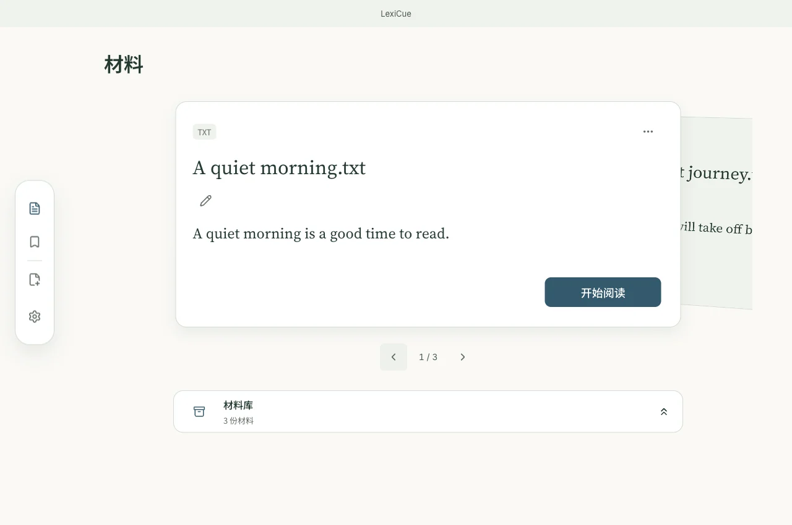

带来自己的英文材料
支持 PDF、DOCX、EPUB、Markdown、TXT、SRT、VTT，也可粘贴英文正文、网页链接或 YouTube 链接，检查提取的内容后导入。
免费 · 开源 · 本地优先
带来想读的英文文章、书籍或字幕。遇到不懂的词句再查，连同原句与理解一起保存，在下次遇见时唤回记忆。

当前 main 界面，使用原创样例数据。
本文介绍当前 main 分支的功能。最新公开下载仍为 v0.4.5（2026 年 10 月 12 日），早于本次阅读工作区和 Mac–iPhone 同步。iPhone 已通过本地签名构建实测，尚无公开安装包。
支持 PDF、DOCX、EPUB、Markdown、TXT、SRT、VTT，也可粘贴英文正文、网页链接或 YouTube 链接，检查提取的内容后导入。
点选单词查词，或选择一段表达查看含义；释义与原文同时可见。
按需显示或隐藏中文译文，进入听读模式；有来源音频时可播放来源。朗读和翻译需相应服务可用。
保存单词或一段表达，同时保留原句、句子译文与可用的词典参考。可填写自己的解释或注释；词典参考不等于确认本句含义。
收藏过的表达会在后续阅读中高亮。打开过去的原句和注释，随时返回当时的材料。
再次打开材料时回到已保存的阅读位置。从收藏跳到来源后，也能返回此前的位置。
在桌面摆放材料卡，将暂时不读的材料收进材料库，按标题或彩色标签寻找。
学习目标为英语；界面可选中文、英语、日语、德语，支持海湾蓝、鼠尾草绿、琥珀暖光、暮光紫、深夜墨色五种主题，阅读中可调字号。
材料与语境收藏保存在本地，可在设置中导出与恢复备份；旧学习记录保留在“历史记录”中。
在“设置 → 设备同步”中配对一台 Mac 和一台 iPhone：扫描临时二维码，在两端核对验证码。连接可达时，材料、语境收藏、注释、标签和阅读位置通过局域网交换。
公开下载为 v0.4.5，提供 macOS、Windows 与 Android 安装包。上方展示的功能已合入 main，需要后续版本或自行从源码构建。
安装前请查看版本说明和对应平台的安装指南。暂不提供公开 iPhone 安装包。
安装指南